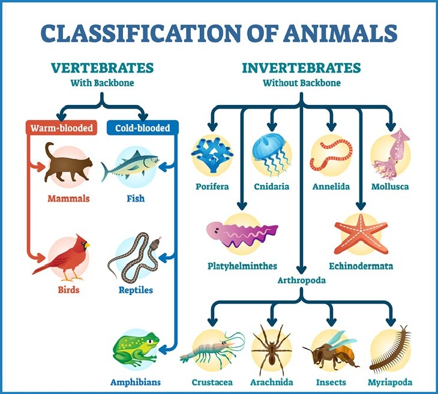
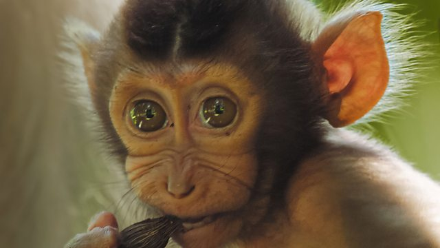
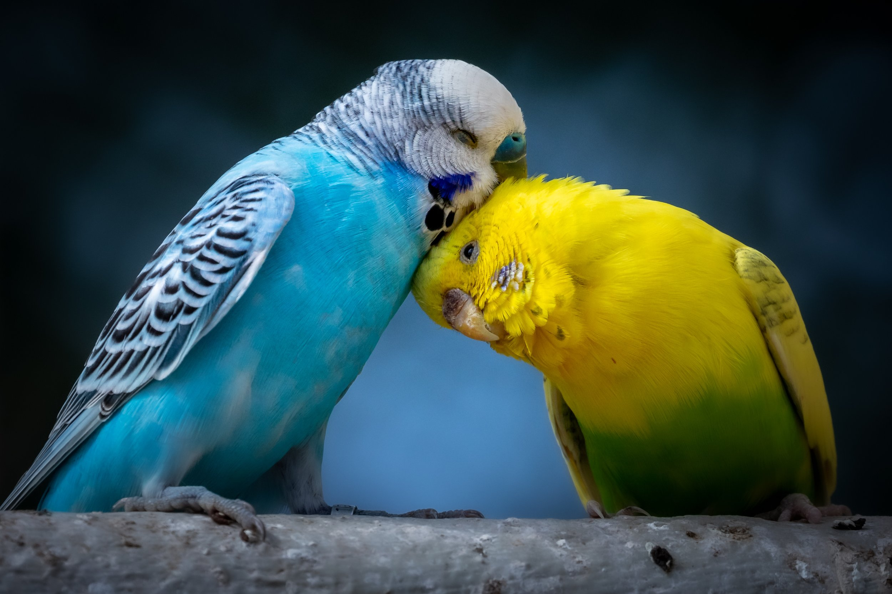

Classification of Animals Chart
Animals are broadly classified into two major groups, including vertebrates and invertebrates. Vertebrates are the ones with a backbone, and Invertebrates are without a backbone. You can see below the animal’s classification chart or diagram to understand the subcategories of both major groups. 
Vertebrate Animals Classification
There are 65000 accounted vertebrate species of animals. However, they only constitute 3% of the animal kingdom. Vertebrates are classified into further subgroups, i.e., warm-blooded and cold-blooded. Let’s look at the warm-blooded vertebrates animals classification first-
Warm-Blooded Vertebrates Classification
Warm-blooded or endothermic animals can adjust their body temperature. Only mammals and birds in the animal classifications are warm-blooded.
Mammals Classification
Mammals are warm-blooded vertebrates with a backbone and full of fur or hair. All mammal infants drink milk. Although whales are an exception, being a mammal, they are born without any hair. There are different classifications of animals in the world, but mammals are the best-known ones. Mammals can be broadly classified into three sub-classes based on reproduction and development:
1. Monotremes (Egg-laying mammals)
Examples: Platypus, Echidna Features: Lay eggs Found mainly in Australia and New Guinea Have mammary glands but no nipples2. Marsupials (Pouched mammals)
Examples: Kangaroo, Koala, Opossum, Wallaby Features: Give birth to underdeveloped young Young develop further in a pouch (marsupium) Mostly found in Australia and the Americas3. Placentals (Placental mammals)
Examples: Humans, Dogs, Elephants, Whales, Bats Features: Young develop fully inside the womb Nourished through a placenta Most diverse and widespread groupBirds Classification
 Birds have over 10,000 species and are distinguished by every other animal because of their feathers and beaks. They have four-chambered hearts and are warm-blooded vertebrates. Birds are diurnal and have great vision.1. Flightless Birds (Ratites)
Examples: Ostrich, Emu, Kiwi, Rhea, Cassowary Features: Cannot fly Strong legs for running Flat breastbone (no keel)2. Perching Birds (Passerines)
Examples: Sparrows, Crows, Robins, Swallows Features: Largest bird group Adapted feet for perching Most are songbirds3. Birds of Prey (Raptors)
Examples: Eagle, Hawk, Owl, Falcon Features: Sharp talons and beaks Excellent eyesight Carnivorous4. Water Birds (Aquatic Birds)
Examples: Duck, Swan, Goose, Pelican Features: Webbed feet for swimming Waterproof feathers Often migrate long distances5. Wading Birds
Examples: Heron, Stork, Flamingo, Crane Features: Long legs and necks Live in shallow water Feed on fish and insects6. Game Birds (Galliformes)
Examples: Chicken, Turkey, Pheasant, Quail Features: Ground-dwelling Plump bodies Often domesticated7. Pigeons and Doves (Columbiformes)
Examples: Rock Pigeon, Dove Features: Short legs and small heads Feed their young with “pigeon milk”8. Parrots (Psittaciformes)
Examples: Macaws, Cockatoos, Parakeets Features: Strong curved beaks Bright plumage Excellent mimics9. Shorebirds
Examples: Sandpiper, Plover, Snipe Features: Found along coasts or wetlands Long beaks for probing sand10. Nocturnal Birds
Examples: Owl, Nightjar Features: Active at night Large eyes for night vision Silent flightCold-Blooded Vertebrates Classification
Cold-blooded or ectothermic vertebrates are unable to regulate their body temperature. Their internal temperature is dependent on outside forces. They lay in the sun and under the shade to cool down and warm up.Fish Classification
 There are many different classifications of animal kingdoms globally, with fish being the most diverse, including over 33,000 species. Fish are aquatic vertebrates and are cold-blooded. They are known for their gills that help them breathe underwater.
There are many different classifications of animal kingdoms globally, with fish being the most diverse, including over 33,000 species. Fish are aquatic vertebrates and are cold-blooded. They are known for their gills that help them breathe underwater.